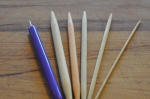
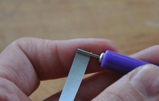
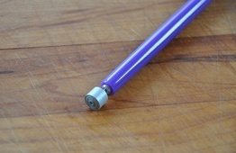
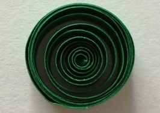
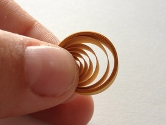
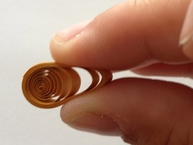
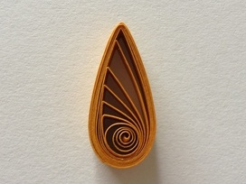
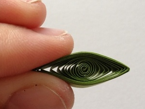
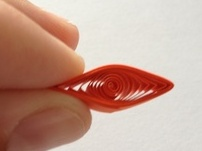
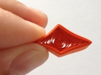

Supplies
Paper:
To learn the basic shapes you will need many scrap
strips of quilling paper to practice with. How many and in what
lengths is entirely up to you.
A slotted or needle quilling
tool.
Glue:
A quick drying tacky variety is best.
Patience:
Quilling is an incredibly rewarding and pleasurable craft
once you get the hang of it, so hang in there and keep on trying!

Different shapes
Tight Rolled Coil:
Insert the tip of your paper strip into
the slot of your quilling tool (or wrap around the quilling needle)
and wind tightly. Secure with glue before sliding the coil off.
|  |  |
Open Coil
Begin as you did with the closed coil. Slide the unglued coil from the tool and allow to gently open into circle shape. Glue end to secure. The open coil is the base shape for all the other shapes in this tutorial.You may wish to make a bunch and then further practice the remaining quilling shapes. 
Tear Drop
|  Begin with an open coil. |
 Pinch one side to create the tear drop shape. |
 Tear drop shape made. |
Marquis

Squeeze both ends of an
open coil to create a marquis shape. Play with where you put your
finger pressure to create different centers.
Squares
|  Start with the marquis |
 Pinch off both rounded sides to a point. |
 Open the diamond shape to reveal the square shape |
 Square with round center. |